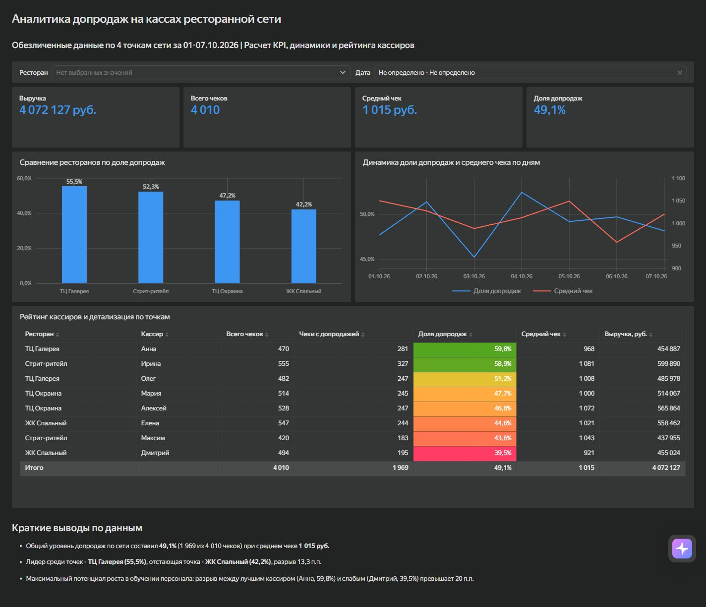

01BI DataLens
Интерактивный дашборд контроля допродаж и среднего чека ресторанной сети (демо-данные). Расчетные метрики, рейтинги точек и фильтры.
Открыть в DataLens ↗Аналитика продаж, маркетинг,
координация проектов и ИИ
По образованию экономист, 13 лет внутри HoReCa. Считаю экономику акций до старта, нахожу сбои в учете и довожу механики до результата на кассе и в вебе.

01Интерактивный дашборд контроля допродаж и среднего чека ресторанной сети (демо-данные). Расчетные метрики, рейтинги точек и фильтры.
Открыть в DataLens ↗Интерактивный расчет точки безубыточности и потери маржи для скидок и акций 1+1 до их запуска на кассе.
Открыть калькулятор ↓Автономный веб-прототип трекера маркетинговых и BTL-запусков сети (в работе связан с Google Sheets + Apps Script).
Запустить демо-пульт ↗ ДемоАудит выгрузок iiko, r-keeper и e-com, сбор требований, дорожные карты на 279+ задач и прототипы с ИИ.
Смотреть кейсы ↓Инструмент для быстрой проверки акций до старта — по методике реальных расчетов в iiko и ритейле.
Удаленная координация маркетинга и аналитики сети пиццерий в команде с локальными маркетологами. В сети более 30 ресторанов, она активно растет.
Собрал рейтинг 32 точек по выгрузкам OLAP iiko, переписал скрипт и памятки кассирам, организовал еженедельный контроль с управляющими. Рассчитал BTL-активности в 20 точках по CPA дополнительного чека и просчитывал фудкост промо-комбо.
Сочинская ресторанная сеть в Красной Поляне. Задачи включали развитие программы лояльности Remarked и отсечение убыточных промо.
Рассчитал welcome-оффер «2000 баллов за регистрацию», подготовил ТЗ на QR-носители в залах, выявил сбой доставки триггера на 7-й день. Провел аудит акций по фудкосту и валовой прибыли в iiko.
Интернет-магазин и онлайн-обучение с клиентской базой 27 000 человек.
Координировал редизайн магазина на Next.js / Payload CMS, перенос курса на поддомен и запуск сезонного проекта. Спроектировал 3-шаговую цепочку брошенной корзины с подарком вместо скидки. Вместе с аналитиком провел аудит выгрузок.
Два ресторана в Ростове Великом (ООО «Вояж») и четыре ресторана PRO.Хинкали / Lali.
Вел дорожную карту на 279 задач и матрицу 70 функций команды. Пересчитал цены 102 блюд по конкурентам и фудкосту, подготовил 4 карты торговых территорий и схему навигации из 7 точек. Провел аудит Яндекс Директа за 9 месяцев и выгрузок r-keeper.